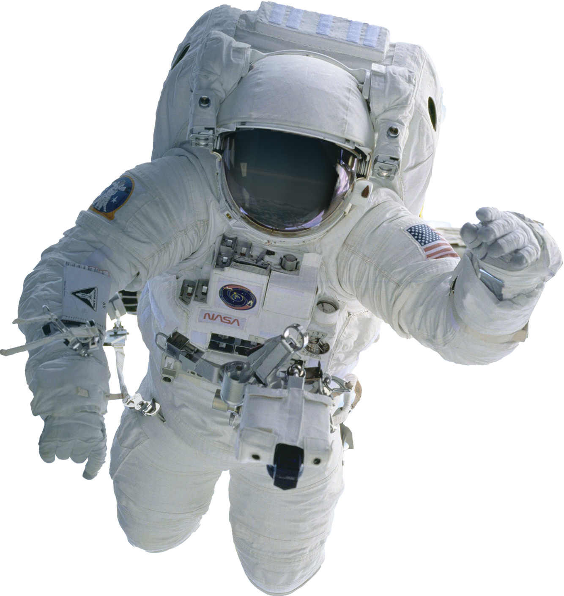

Explora el Espacio
Solo 24 personas han viajado fuera de la órbita terrestre baja. ¿Te atreves a llegar más allá?

Solo 24 personas han viajado fuera de la órbita terrestre baja. ¿Te atreves a llegar más allá?
Júpiter es el planeta más grande del sistema solar y el quinto en orden de lejanía al Sol. Es un gigante gaseoso que forma parte de los denominados planetas exteriores.
Marte es el cuarto planeta en orden de distancia al Sol y también es conocido como «el planeta rojo» debido a la apariencia rojiza5 que le confiere el óxido de hierro predominante en su superficie.
Mercurio es el planeta del sistema solar más cercano al Sol y el más pequeño. Es uno de los cuatro planetas rocosos o sólidos y está formado aproximadamente por un 70 % de elementos metálicos y un 30 % de silicatos
Han pasado 5 años, Juno te ha transportado exitosamente a Júpiter, el planeta gaseoso, a continuación puedes ver la información que tenemos del planeta
Rosalind será tu transporte en marte, para que tu viaje sea cómodo, tiene seis ruedas de 25cm de diámetro y unidades de calentadores de radioisótopo para mantener calientes sus componentes electrónicos por la noche
Han pasado 3 años, BepiColombo te ha transportado exitosamente a Mercurio, MPO y MMO te acompañaran a visitar su órbita, a continuación puedes ver la Información que tenemos del planeta